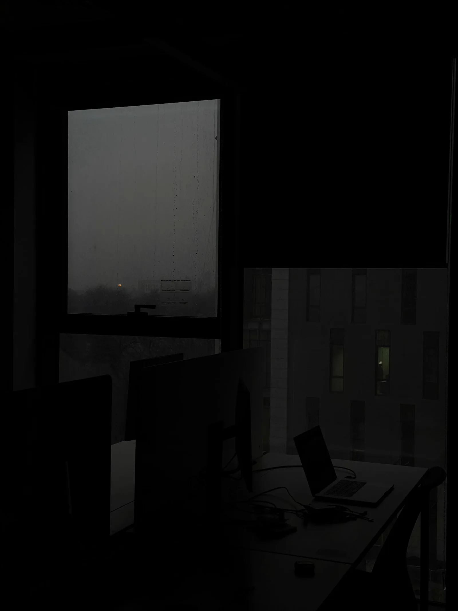

Transforme cliques em clientes reais
Estratégia, mídia e otimização diária para transformar investimento em vendas.
Trabalhos realizados

Sobre
Sou gestor de tráfego com foco em aquisição, performance e escala. Estruturo campanhas no Meta Ads e Google Ads, acompanho as métricas todos os dias e otimizo o funil para reduzir custo por resultado e aumentar previsibilidade de vendas.
Serviços
Planejamento de mídia
Definição de oferta, público, verba, canais e metas para campanhas começarem com direção clara e expectativa realista de resultado.
Gestão de Meta Ads
Criação, monitoramento e otimização de campanhas no Instagram e Facebook com foco em leads qualificados, vendas e remarketing.
Gestão de Google Ads
Campanhas de pesquisa, display, performance max e YouTube orientadas por intenção de compra e leitura constante dos dados.
Criativos e testes
Organização de hipóteses, testes A/B e leitura de criativos para descobrir quais mensagens e formatos mais convertem.
Otimização e relatórios
Ajustes semanais com base em CAC, CPL, CTR, ROAS e taxa de conversão para manter crescimento com mais controle.
Como funciona
Diagnóstico
Começo entendendo sua oferta, público, metas e o que já foi feito.
A partir dessa leitura, identifico oportunidades, gargalos e o melhor caminho para atrair clientes com mais previsibilidade.
Estruturação
Organizo campanhas, públicos, criativos e mensagens de acordo com o objetivo.
Tudo é configurado para medir os resultados certos e direcionar a verba para o que tem maior chance de conversão.
Otimização
Acompanho os dados, ajusto as campanhas e corto desperdícios durante a operação.
Com os aprendizados, reforço o que performa melhor e busco escalar mantendo controle de custo e qualidade dos leads.